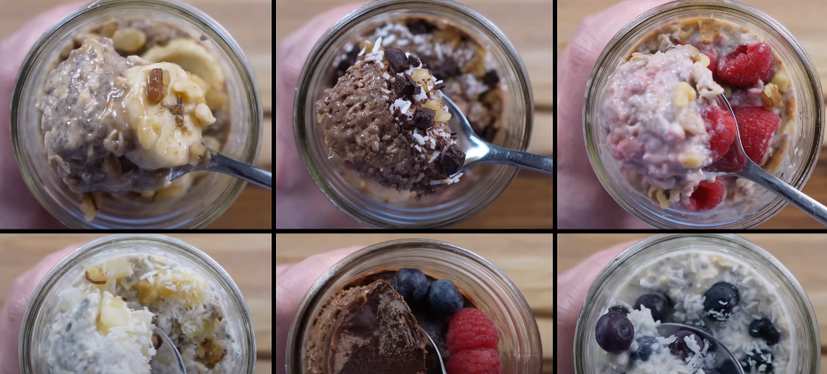
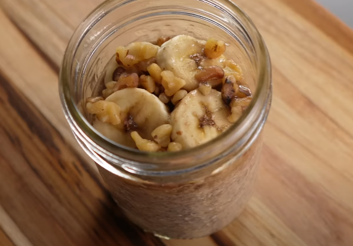
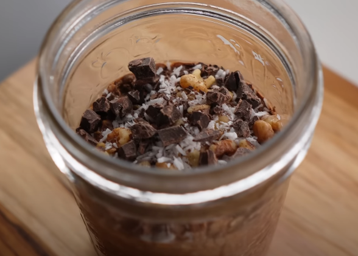
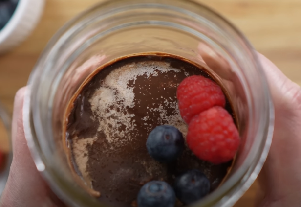

Overnight oats

Image from Toasty Apron
Description
If you don't have time to make breakfast in the mornings, Overnight Oats are a meal prep game-changer.
Healthy, delicious, and super easy to prep - you can have a work week's worth of breakfast prepared in minutes. I especially love them because they keep me feeling full for hours.
There are a ton of different and fun flavours to try - here I'll show you 3 of my favourite overnight oats flavour combinations, everything from bold and decadent to fruity and tropical.
Base recipe
This is the recipe upon which you can add whatever combinations of flavours you like. Just mix them all up and leave them overnight in the fridge
- 1/2 cup Rolled oats
- 1 tbsp Chia seeds
- 1/2 cup Milk
- 1/4 cup Greek yogurt
- 1 tbsp Maple syrup
If you want to prepare more portions, just multiply the ingredients by the number of portions you want to make.
For example, 4 servings would look like this:
- 2 cups Rolled oats
- 1/4 cup Chia seeds
- 2 cups Milk
- 1 cup Greek yogurt
- 1/4 cup Maple syrup
Recipe variations
Banana bread oats

- 1 serving Base oats
- Ripe banana
- 1/2 tsp Cinnamon
- 1/2 tsp Vanilla extract
Steps
- Mush 3/4 banana until it turns into a puree.
- Add the banana to the base oats and mix in all of the ingredients.
- Add the rest of the sliced banana as a topping to the oats.
Mocha Latte oats

- 1 serving Base oats, but scaling the 1/2 milk down to 1/4
- 1/2 Shots of espresso
- 1 tbsp Cocoa powder
- Pinch of salt
Steps
- Add the ingredients to a jar and mix them up.
- Leave them overnight. After that cover with toppings and serve.
Choco-Peanut butter oats

For main cup
- 1 serving Base oats
- 2 tbsp Peanut butter
- 1 tbsp Cocoa powder
For chocolate syrup
- 1 tbsp Coconut oil
- 1 tsp Cocoa powder
- 2 tsp Maple syrup
- Pinch of salt
Steps
- In the main cup, mix the ingredients.
- In a separate bowl, prepare the syrup and pour it over the main cup.
- Leave it in the fridge overnight.
- Now that the shell has hardened, you can add some berries to finish it off.
We're done! Congratulations on preparing these nutritious and healthy treats. For more recipes, click below to return to the home page: